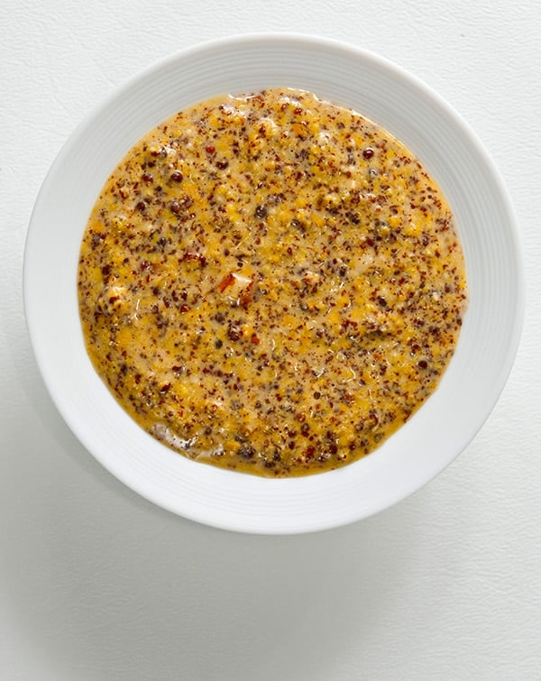

Home
Mustard Recipe

Description
Do you love the tangy and sharp bite offered by mustard? Well you're in the right place. In this recipe, you will learn how to create your very delicious, homemade mustard! All you have to do is mix mustard seeds with a few key ingredients, leave the mixture to ferment, and blitz with a hand blender. While it takes some patience and care, it's well worth the wait.
Special equipment includes a glass canning jar, spice or coffee grinder, and immersion blender. If you don't have an immersion blender or spice grinder, you can leave them out all together (although your mustard will be whole grain).
Ingredients
- 3 tablespoons yellow mustard seeds
- 3 tablespoons brown mustard seeds
- 1/2 cup beer, water, or cider
- 3 tablespoons vinegar (such as white wine, sherry, or white)
- 2 teaspoons kosher salt
- 2 tablespoons honey
Directions
- Grind the mustard seeds in a few batches in the spice grinder to your liking. They don't need to be finely ground. You can skip this step if you prefer a whole grain mustard.
- Add the contents of the spice grinder to a medium bowl. Add beer, vinegar, salt, and honey. Whisk well.
- Transfer the mustard to your canning jar. It will be runny but will thicken over time. Place the jar in a cool, dark area (such as inside a cabinet).
- Allow the mustard to ferment at room temperature for up to 5 days. Open the lid once a day to allow the built up gasses to escape.
- Using the immersion blender, blend the mustard until a desired consistency has been reached. Store in the refrigerator for up to 6 weeks. Enjoy!